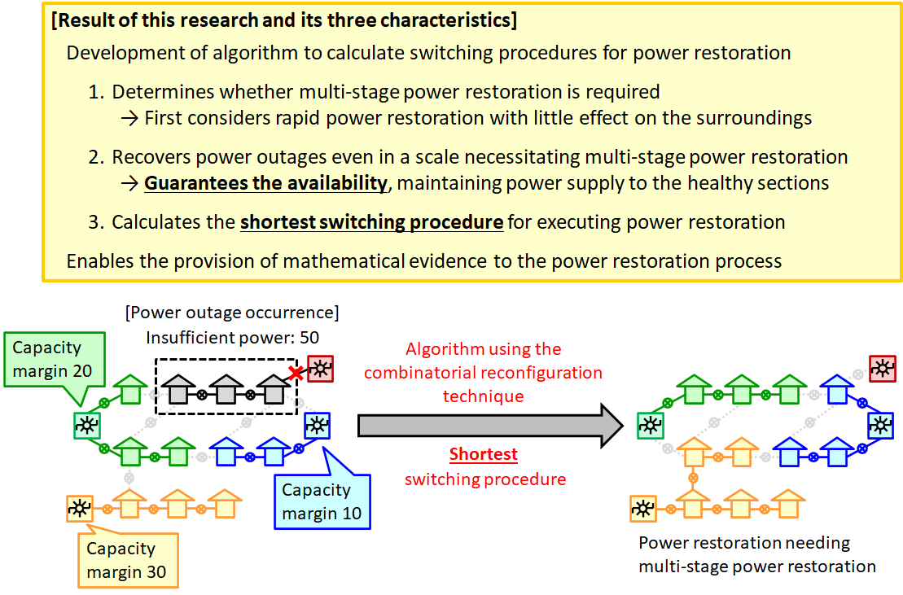

[Research News] Development of Algorithm to Calculate Shortest Procedure for Power Restoration -- Applicable to Multi-Stage Power Restoration, with Application Expected in Distribution System Operations on Wider Areas
A press release (in Japanese) was published on November 7, 2022, jointly by Tohoku University, Kyoto University, Chubu University, and Meidensha Corporation, and announced industry-academia collaboration and research results in our research project. The following four researchers from this project have been working on this topic.
ITO, Takehiro (Tohoku University, Head Investigator of the project and Principal Investigator of Group A01)
KAWAHARA, Jun (Kyoto University, Principal Investigator of Group B01)
SUZUKI, Akira (Tohoku University, Group B01)
IIOKA, Daisuke (Chubu University, Group B01)
--------------------------------------
[Outline]
During power outages, blackout sections without faults may be able to be recovered early using the capacity margins of surrounding supply sources. However, remote supply sources must be utilized in cases where the capacity margins of the neighboring supply sources are insufficient for the scale of the power outage, which is called multi-stage power restoration. More specifically, multi-stage power restoration is a recovery method where supply route changes occur even in healthy sections where no power outage has occurred (See Fig. 1). In multi-stage power restoration, the distribution network subject to control becomes broader, and in addition, even healthy sections are subjected to control; therefore, it is accompanied by difficulties in distribution system operations. To solve these difficulties, a research team composed of Prof. Takehiro Ito and Assoc. Prof. Akira Suzuki of the Graduate School of Information Sciences, Tohoku University, Assoc. Prof. Jun Kawahara of the Graduate School of Informatics, Kyoto University, Assoc. Prof. Daisuke Iioka of the College of Engineering, Chubu University, and Meidensha Corporation initiated joint research in 2020 under the auspices of the KAKENHI Grant-in-Aid for Transformative Research Areas (B) "Combinatorial Reconfiguration" (*1), and has developed an algorithm to calculate a shortest procedure for power restoration. (Joint patent application pending).
The algorithm of this research determines whether multi-stage power restoration is needed for power restoration, and in either case, the algorithm calculates a shortest switching procedure to execute power restoration. This algorithm employs a novel technique called “combinatorial reconfiguration,” which enables the calculation of a shortest switching procedure for power restoration while maintaining power supply to the healthy sections. Moreover, the algorithm theoretically ensures the necessity of multi-stage power restoration and the maximum shortness of the switching procedure; thereby enabling power restoration accompanied by mathematical evidence. The algorithmic research was primarily performed by Tohoku University and Kyoto University, while research in the power grid technology fields was carried out by Chubu University and Meidensha.
Modern society requires control of more widespread power distribution grids with guaranteed availability for situations such as large-scale power outages during major disasters and variation of electric demand density caused by lifestyle transformations. In response to such requests, the algorithm proposed in this research is anticipated to be applied to higher-order distribution system operations, such as automated power restoration, clearing grid congestion, and distribution system planning for downsizing.
 Figure 1: Results of this research and image of multi-stage power restoration. Although the capacity margins of the green and blue supply sources are insufficient for power restoration even if combined, power restoration is performed by switching healthy sections to the yellow supply source. (*1) In this research, the researchers of Tohoku University, Kyoto University, and Chubu University received the following grants. (Grant Numbers: JP20H05793, JP20H05794)
Research project: Fusion of Computer Science, Engineering and Mathematics Approaches for Expanding Combinatorial Reconfiguration https://core.dais.is.tohoku.ac.jp/en/ [Detailed Description] Background of Research Power distribution networks are usually designed to supply power from multiple routes so as to minimize blackout sections when faults occur. Distribution networks contain multiple switch gears, and the power supply route is determined based on their open/closed states. When a fault on a distribution network causes a power outage, it takes time to restore the section that caused it. However, early power restoration may be able to be realized for the blackout sections where no fault occurred, using the capacity margins of surrounding supply sources. The capacity margins of remote supply sources must be utilized when those of the neighboring ones are insufficient for the scale of the power outage, which is known as multi-stage power restoration. Multi-stage power restoration is a power restoration method where supply route changes occur even in healthy sections without any power outages. In multi-stage power restoration, the distribution network subject to control becomes broader. Additionally, even healthy sections are subjected to control; therefore, it is associated with difficulties in distribution system operations.
Existing Research
Power restoration is a crucial topic, and while research and development in practical aspects are taken for granted, research has also been progressing even in the theoretical field of algorithms. However, existing theoretical research on algorithms has primarily derived supply routes capable of power restoration, and it was difficult to derive the switching procedures for execution. In particular, multi-stage power restoration requires the control of supply routes for healthy sections, and the generation of new power outages in the course of the switching procedure must be avoided. Such switching procedures that consider availability are necessary to advance multi-stage power restoration. In fact, most existing theoretical research on algorithms was performed after having restricted itself to cases where multi-stage power restoration was not required. On the other hand, in research and development from practical aspects, although a switching procedure considering availability was calculated, the application area of multi-stage power restoration was limited and the switching procedure was not always the shortest. Methodology of this Research
In this research, we developed an algorithm that determines whether multi-stage power restoration is required for power restoration, and in either case, the shortest switching procedure is calculated to execute power restoration. By first determining whether multi-stage power restoration is required, we enable rapid power restoration with little effect on the periphery. The proposed algorithm can calculate a shortest switching procedure for power restoration while maintaining power supply to the healthy sections even in power outages of a scale necessitating multi-stage power restoration. Moreover, regardless of whether multi-stage power restoration is required, the switching procedure calculated by this algorithm recovers power with the minimum number of switch operations. Two technologies were primarily used in the development of this algorithm. The first is a new algorithmic technique called “combinatorial reconfiguration,” which can guarantee availability so that power supply is maintained to the healthy sections. The other is a data structure called a “zero-suppressed binary decision diagram,” which can compress and maintain all the executable configurations of switch gears. With this algorithm, the necessity of multi-stage power restoration as well as the maximum shortness of the switching procedure is theoretically ensured; thereby enabling power restoration accompanied by mathematical evidence. However, in terms of actual operations, it is also conceivable that this algorithm may be approximately utilized according to the scale of the distribution grid and the processing power of the computer. In such cases, application as a support tool for the post-verification of restoration procedures is also anticipated. |